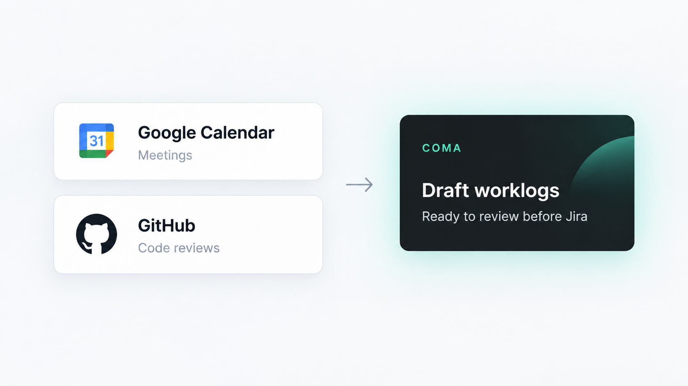

Select your days
Drag across consecutive days or Ctrl/Cmd-click separate dates in the calendar.
Chrome extension for Jira Cloud
You’re already keeping track of your work in Jira.
No timers. No Jira admin installation.
The main idea
Drag across consecutive days or Ctrl/Cmd-click separate dates in the calendar.
Jira status and assignment history become editable task and time drafts.
You decide what goes to Jira.
Fast manual edits
Select any combination of days and add the same task to all of them. Drag a selection across a range, or drag an entry to another day when plans change.
At a glance
Open Task time beside the calendar to see totals for any period.

Optional context
Connect Google Calendar for meetings and GitHub for submitted reviews.

Minimal by design
No dashboards to configure. No timers to babysit. Just a calendar for drafting, editing and posting time.
The short version
No. Jira status history helps estimate time; meetings and reviews can add more context. Suggestions are estimates, not measured activity.
No. Every suggestion remains a draft until you submit it.
Jira Cloud in Chrome. Google Calendar and GitHub are optional. Your organization may still restrict extensions or connected services.